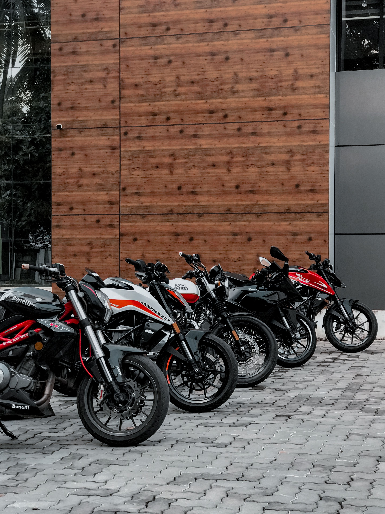
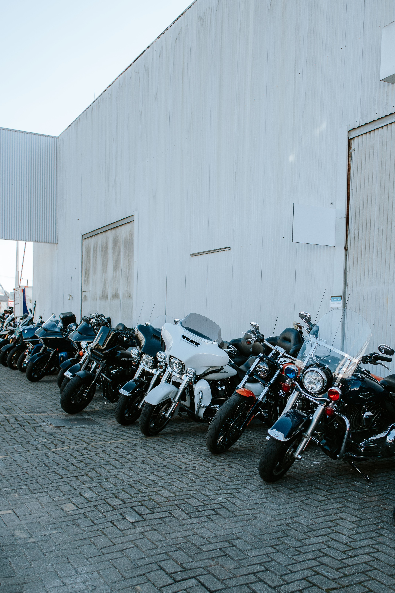

Cruiser motorcycles are one of the most recognizable and comfortable types of motor bikes. They are designed mainly for relaxed riding, comfort, and style rather than speed or off-road performance. Cruiser bikes usually have a low seat height, wide handlebars, and a stretched-out riding position that allows the rider to sit back comfortably. This design makes them a popular choice for long-distance rides and casual road trips. Many cruiser motorcycles also have larger engines, which provide strong power and a smooth ride on highways. In addition to comfort, cruiser bikes are known for their classic and attractive appearance, often featuring chrome details, large fuel tanks, and a low, heavy frame. Riders often choose cruisers because they offer a calm and enjoyable riding experience while also giving a sense of freedom and personality. Overall, cruiser motorcycles are ideal for people who value comfort, style, and relaxed travel on the open road.
Cruiser motorcycles are made for riders who enjoyAnother reason cruisers are popular is their strong and stylish appearance. Many cruiser motorcycles have large engines, deep exhaust sounds, and shiny metal details that make them stand out. Unlike sports bikes that focus on speed, cruisers focus more on the riding experience itself. A cruiser usually has a low frame and a comfortable seat that allows the rider to stay relaxed for a longer time. The engine on a cruiser is often strong enough to provide smooth performance on highways.

Cruiser motorcycles are popular because they combine comfort, power, and style in one design. These bikes are built for easy and relaxed riding, which makes them a favorite for long-distance travel and scenic road trips. A cruiser usually has a low frame and a comfortable seat that allows the rider to stay relaxed for a longer time. The engine on a cruiser is often strong enough to provide smooth performance on highways, while the heavier body helps the bike feel stable on the road. Cruiser motorcycles are also known for their unique look, with features such as a low body shape, large front forks, and a classic design that gives them a bold appearance. For many riders, cruisers are more than just transportation because they represent freedom, confidence, and enjoyment. This is why cruiser motorcycles continue to be one of the most loved types of bikes among riders around the world. Cruiser motorcycles are also known for their unique look, with features such as a low body shape, large front forks, and a classic design that gives them a bold appearance. For many riders, cruisers are more than just transportation because they represent freedom, confidence, and enjoyment. This is why cruiser motorcycles continue to be one of the most loved types of bikes among riders around the world.